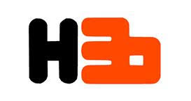
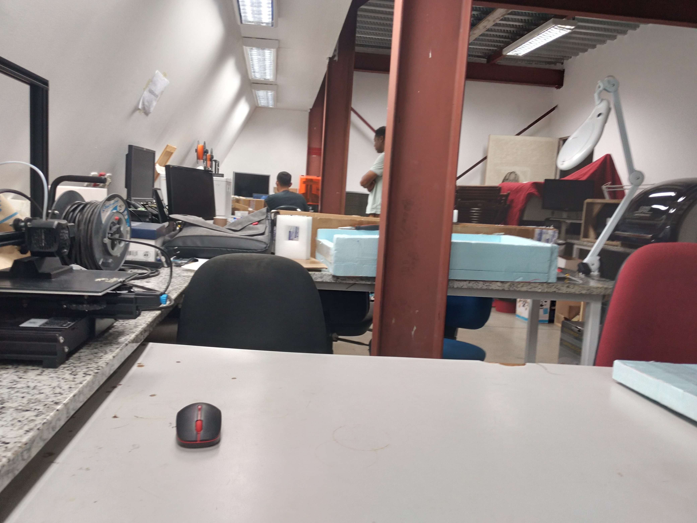

Présentation de l'entreprise
Les fab labs sont un réseau mondial de laboratoires locaux La mission du FabLab H3O est de fournir le cadre, les outils et les moyens pour faire monter en compétence et renforcer l'autonomie de la communauté et des usagers. Pour ce faire, la transmission de savoirs, le développement d'une culture de l'innovation et de l'expérimentation est au coeur de notre philosophie. Innovation, design-thinking, living-lab, résolution de problématiques, appropriation des évolutions technologiques, pluridisciplinarité... tels sont les credos du FabLab H3O. L'accès ouvert et inclusif aux savoirs, les outils de fabrication numérique du 21e siècle, les équipements et technologies font partie des clés pour redonner le pouvoir d'agir aux individus.
Tous les FABLAB ont une spécialités, celui de Bras-Panon où j'ai passé mon stage était spécialisé dans l'impression 3D et la découpe laser de plexiglass

J'avais pour devoir en introduction à un nouveau langage L'Arduino de faire un circuit basique et une présentation qui est ici: Découverte de l'arduino
Les semaines qui ont suivies, j'ai aidé dans les présentations et dans la production de l'affiche vu plus haut
Enfin Lors des dernières semaines j'ai aussi réalisé un projet qui associé la page facebook du FABLAB de Bras-Panon et une carte Arduino physique, qui affiche le nombre de likes de la page
En conclusion ce stage m'a beaucoup appris quant à la communication en entreprise.